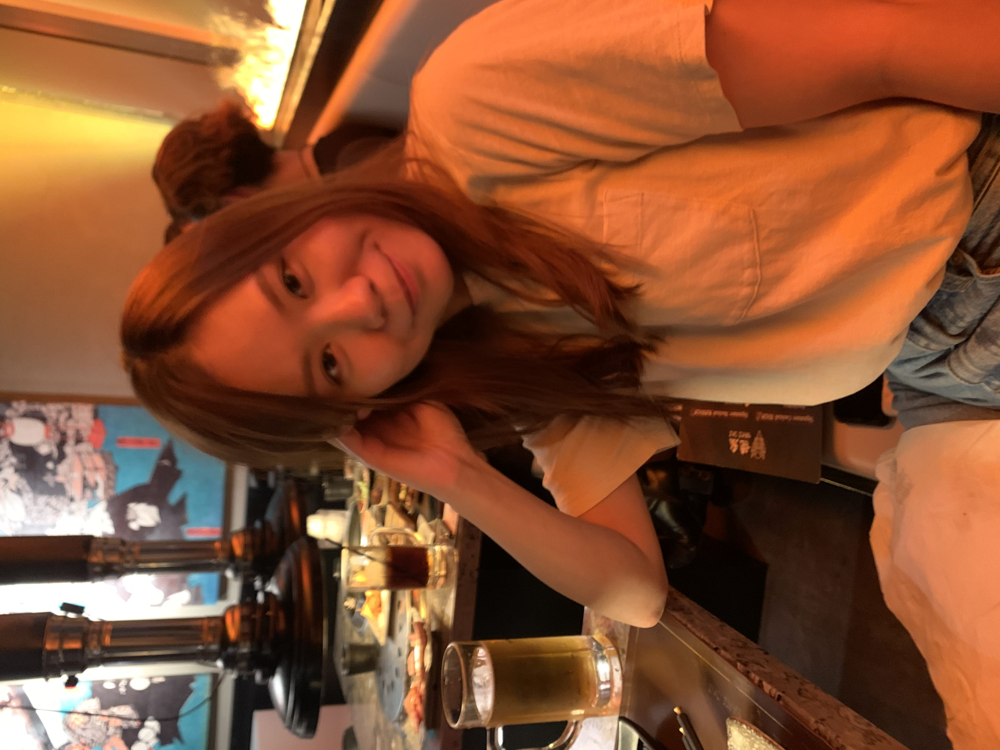

My Resume

Summary
- Trilingual in English, Cantonese, and Mandarin.
- 4 years of IT project experience in project coordination and business analysis to support the project delivery team and business activities of the team.
- Experienced in coordinating processing and administrative functions of the team, as well as making recommendations on business processes.
- Experienced in working with public sectors and NGOs including YWCA, UNICEF, HKEX.
- Proficient in coordinating between different teams and internal/external parties within the project, timeline monitoring, resources allocation and project documentation.
- Worked with development team frequently to handle documentation, user requirements, implementation, testing, and bug fixing.
- Disciplined and holding self and others accountable, self-motivated, multitasking, and lifelong learner.
Education
Post Graduate Diploma in Big Data Analytics
MAY 2022 – DEC 2022, GEORGIAN COLLEGE
- GPA: 93.75/100
- Graduated with Good Standing (Dean's List)
Bachelor of Commerce (Hons) in Marketing
SEP 2015 – JUL 2017, Hong Kong Baptist University
- GPA: 3.4/4
- Graduated with First Class Honors (Dean’s List)
Higher Diploma in Business Administration
SEP 2012 – JUL 2015, Hong Kong Institute of Vocational Education
- Graduated with Distinction Grade
Work Experience
Cantonese Interpreter, Kelly Services
Mar 2023 - Present
- Rendered English-Cantonese interpreting services to a variety of industries and public sectors incl medical, banking, insurance, emergency services (e.g. 911), utilities, social services, etc.
- Provided quality customer services to both the English-speaking clients and their Cantonese-speaking customers.
- Coordinated between two parties to solve business problems and customer problems.
Project Coordinator & Associate Business Analyst, Global Technology Integrator LTD
May 2019 - Apr 2022
- Worked with NGOs and Public Sectors including YWCA, UNICEF, The Stock Exchange of Hong Kong Limited, The Law Society of Hong Kong and more.
- Coordinated business activities across the team by organizing and prioritizing tasks including scheduling meetings, internal and external communication, managing project documentation, tracking project progress, and procurement process with suppliers.
- Acted as a bridge between different internal and external parties to collect and disseminate information for achieving business objectives and project deliverables.
- Collaborated with clients to identify the business needs, project objective and user requirements.
- Prepared documentation and status reports for internal and external use in support of business outcome and project objectives and deliverables.
- Monitored consistently requirement accordance, work quality and task progress of the development teams; Validated and ensured data accuracy.
- Wrote test cases, performed system QA, engaged in UAT, and handled bug fixing using MSSQL, HTML, CSS, Microsoft Excel.
- Travelled regularly, working on-site with IT and Business users for technical / user meetings, UAT and knowledge transfer sessions.
- Coordinated with Sales and Technical team to write Project Proposals and Tender Responses; successfully won bids over 8+ projects.
- Liaised with international suppliers and clients to achieve quotation, invoice, and order processing.
- Assisted in resource allocation and budget tracking by maintaining reports using MS Excel
Project & Data Services Officer, Wisers Information LTD
Apr 2018 - May 2019
- Communicated project flow and work tasks across internal functional departments.
- Coordinated business activities across the team including scheduling meetings, internal communication, managing project documentation, and tracking project progress.
- Assigned and managed team resources and confirmed and tracked timelines.
- Prepared documentation and status reports for internal use.
Counter Service Officer, Hang Seng Bank LTD
Jun 2017 - Apr 2018
- Provided quality service through efficient and customer-friendly counter transactions.
- Delivered banking services and solutions by understanding customer needs and making appropriate referrals.
- Supported branch operations and adhered to relevant guidelines and procedures.
- Worked accurately under pressure to prevent transaction or operation errors.
Skills
- Communication skills
- Detail oriented
- Analytical and Problem Solving skills
- Organizational skills
- Web development (html, css, javascript)
- MS Office, Outlook, SharePoint
- Microsoft Excel, Power Query
- Microsoft Dynamics 365
- MSSQL | NoSQL
- Python
- Tableau | Power BI
- Sitecore CMS
My Web Projects
Contact me